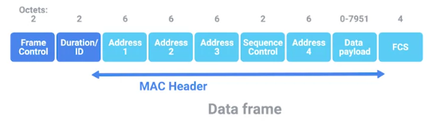

Redes Inalámbricas
Introducción a las tecnologías de redes inalámbricas
Las especificaciones más comunes sobre cómo deben comunicarse los dispositivos de redes inalámbricas están definidas por las normas IEEE 802.11. Este conjunto de especificaciones, también llamada "la familia 802.11", forma el conjunto de tecnologías que llamamos Wi-Fi.
Los dispositivos de redes inalámbricas se comunican entre sí a través de ondas de radio. Diferentes estándares 802.11 generalmente usan el mismo protocolo básico, pero podrían operar en diferentes bandas de frecuencia. Una banda de frecuencia es una cierta sección del espectro radioeléctrico que se ha acordado utilizar para ciertas comunicaciones. Las redes Wi-Fi operan en unas pocas bandas de frecuencia diferentes. Más comúnmente, en las bandas de 2.4 GHz y 5 GHz. Las especificaciones más comunes que puedes encontrar son 802.11b, 802.11a, 802.11g, 802.11n y 802.11ac.
Desde la perspectiva de nuestro modelo de red, debes pensar en los protocolos 802.11 como que definen la manera en operamos, tanto en la capa física como en la de enlace de datos.

Una trama 802.11 tiene varios campos. El primero se llama "campo de control de la trama". Este campo mide 16 bits y contiene una serie de campos secundarios que se usan para describir cómo se debe procesar la trama en sí. Esto incluye cosas como qué versión del 802.11 se usó.
El siguiente campo se llama "campo de duración". Especifica el tamaño total de la trama. Así, el receptor sabe cuánto tiempo le llevará escuchar la transmisión.
Después de esto, hay cuatro campos de dirección.
Un punto de acceso inalámbrico es un dispositivo que une las partes inalámbricas y cableadas de una red. Una sola red inalámbrica podría tener un montón de diferentes puntos de acceso para cubrir un área grande. Los dispositivos en una red inalámbrica se asociarán con un determinado punto de acceso. Este suele ser el punto al que estén más cerca físicamente hablando. Pero, también puede estar determinado por muchas otras cosas como la intensidad general de la señal y la interferencia inalámbrica. Las asociaciones no solo son importantes para que el dispositivo inalámbrico se comunique con un punto de acceso específico, también permiten que las transmisiones que llegan al dispositivo inalámbrico se envíen por el punto de acceso correcto.
Hay cuatro campos de dirección, porque tiene que haber espacio para indicar qué punto de acceso inalámbrico deberá procesar la trama. Por lo tanto, tendremos nuestro campo de dirección de origen normal, que representará la dirección MAC del dispositivo emisor. Pero, también tendremos el destino previsto en la red junto con una dirección de receptor y una dirección de transmisor. La dirección del receptor sería la dirección MAC del punto de acceso que debe recibir la trama, y la dirección del transmisor sería la dirección MAC de lo que haya transmitido la trama. Como todas las direcciones en una trama 802.11 son direcciones MAC, cada uno de esos cuatro campos mide 6 bytes.
Entre el tercer y el cuarto campo de dirección encontrarás el campo de control de secuencia. El campo de control de secuencia mide 16 bits y contiene, principalmente, un número de secuencia usado para realizar un seguimiento del orden de las tramas.
Después de esto viene la sección de la carga útil de datos, que tiene todos los datos de los protocolos más arriba en la pila.
Por último, tenemos un campo de secuencia de verificación de tramas que contiene una suma de verificación utilizada para una verificación por redundancia cíclica.
Las muchas especificaciones diferentes de 802.11, más comúnmente b, a, g, n y ac, funcionan con el mismo protocolo de enlace de datos básico. Pero, la forma en que operan en la capa física varía. Cada una de estas especificaciones puede tener diferentes rangos, puede usar diferentes técnicas de modulación, puede tener diferentes tasas de bits de transmisión, operar en diferentes bandas de frecuencia, etc.
Lo más importante a recordar es que las redes que operan en la banda de 5Ghz son casi siempre más rápidas, pero tienen un rango menor. La mayoría de las redes de 2.4Ghz son ligeramente más lentas y susceptibles a las interferencias, pero generalmente cubren un área más grande.
https://es.wikipedia.org/wiki/IEEE_802.11
Configuraciones de red inalámbrica
Hay redes ad-hoc, en las que todos los nodos se comunican directamente entre sí. Hay redes inalámbricas o WLAN, en las que uno o más puntos de acceso actúan como puente entre una red inalámbrica y otra cableada. Y hay redes de malla, que son una especie de híbrido entre ambas.
En una red ad-hoc, realmente no hay ninguna infraestructura de red de respaldo. Cada dispositivo involucrado con la red se comunica con cualquier otro dispositivo dentro del alcance. Y todos los nodos ayudan a pasar los mensajes. Algunos smartphones pueden establecer redes ad-hoc con otros smartphones en la zona para que las personas puedan intercambiar fotos. videos o información de contacto. A veces, también verás redes ad-hoc utilizadas en configuraciones industriales o de almacenes, en las que partes individuales de equipos pueden tener que comunicarse entre sí pero no con algo más. Por último, las redes ad-hoc pueden ser herramientas poderosas en situaciones de desastre. Si un desastre natural como un terremoto o un huracán derriba toda la infraestructura existente en un área, los socorristas profesionales pueden utilizar una red ad-hoc para comunicarse entre sí mientras realizan iniciativas de búsqueda y rescate.
Una LAN inalámbrica o WLAN, consiste en uno o más puntos de acceso que actúan como puentes entre la red inalámbrica y la red por cable. La LAN por cable contiene el enlace de Internet saliente. Para acceder a recursos fuera de la WLAN, los dispositivos inalámbricos se comunicarán con puntos de acceso. Luego reenvían el tráfico al router de la puerta de enlace, en donde todo transcurre con normalidad.
Las redes de malla son como las redes ad-hoc ya que muchos de los dispositivos se comunican entre sí de forma inalámbrica, lo que formaría una malla si trazaras líneas para todos los enlaces entre todos los nodos. La mayoría de las redes de malla que encontrarás están formadas solo por puntos de acceso inalámbricos y seguirán conectadas a una red cableada. Este tipo de red te permite implementar más puntos de acceso en la malla sin tener que instalar un cable para cada uno de ellos. Con este tipo de configuración, realmente puedes aumentar el desempeño y el alcance de una red inalámbrica.
Canales inalámbricos
Los canales son secciones individuales y más pequeñas de la banda de frecuencia general usada por una red inalámbrica. Los canales son importantísimos porque permiten abordar un problema de red muy antiguo, los dominios de colisión. Quizás recuerdes que un dominio de colisión es cualquier segmento de red donde una computadora pueda interrumpir a otra. Los dispositivos inalámbricos están condenados a superponer sus comunicaciones. Los canales ayudan a solucionar este problema en cierta medida.
Para redes inalámbricas que operan en una banda de 2.4 GHz, lo que realmente queremos decir es que operan aproximadamente en la banda que va 2.4 GHz a 2.5 GHz. Entre estas dos frecuencias hay una cantidad de canales, cada uno con un ancho de una cierta cantidad de MHz. Como diferentes países y regiones tienen diferentes comités reguladores para el uso de las frecuencias de radio, la cantidad exacta de canales disponibles para usar depende de la parte del mundo en que te encuentres. Por ejemplo, al tratar con una red 802.11b, el canal 1 opera a 2412 MHz, pero como el ancho del canal es de 22 MHz, la señal realmente reside en las frecuencias entre 2401 MHz y 2423 MHz. Algunos canales se superponen, otros están lo suficientemente separados para no interferir entre sí en absoluto.
Veamos nuevamente la red 802.11b que opera en una banda de 2.4 GHz, porque realmente es la más simple y los conceptos se traducen a todas las demás especificaciones 802.11. Con un ancho de canal de 22 MHz, el canal 1, con su punto medio en 2412 MHz, siempre está completamente aislado del canal 6 cuyo punto medio está en 2437 MHz. Para una red 802.11b, esto significa que los canales 1, 6 y 11 son los únicos que nunca se superponen en absoluto.
Hoy en día, la mayoría de los equipos de redes inalámbricas están desarrollados para detectar automáticamente qué canales están más congestionados. Algunos puntos de acceso solo realizarán este análisis cuando se inicien, otros cambiarán dinámicamente su canal según sea necesario.
Seguridad inalámbrica
WEP significa "privacidad equivalente al cableado" y es una tecnología de encriptación que proporciona un nivel de privacidad muy bajo. Al usar WEP proteges tus datos un poco, pero en realidad, solo debería verse tan seguro como enviar datos sin encriptar a través de una conexión por cable. El estándar WEP es un algoritmo de encriptación muy débil. WEP solo usa 40 bits para sus claves de encriptación.
En muchos lugares, WEP se reemplazó rápidamente con WPA, o acceso protegido a Wi-Fi. WPA, de manera predeterminada, utiliza una clave de 128 bits, lo que hace que sea mucho más difícil de descifrar que WEP.
Hoy en día, el algoritmo de encriptación más utilizado para redes inalámbricas es WPA2, una actualización al WPA original. WPA2 utiliza una clave de 256 bits que lo hace aún más difícil de descifrar.
Otra forma común de ayudar a proteger las redes inalámbricas es a través del filtrado MAC. Con el filtrado MAC, configuras tus puntos de acceso para permitir solo conexiones desde un conjunto específico de direcciones MAC que pertenecen a dispositivos en los que confías.
Redes celulares
Otra forma muy popular de red inalámbrica es la red celular, también llamada red móvil. Al igual que hay muchas especificaciones 802.11 diferentes, hay muchas especificaciones celulares diferentes. Al igual que Wi-Fi, las redes celulares funcionan sobre ondas de radio, y hay bandas de frecuencia específicas reservadas para transmisiones celulares. Una de las mayores diferencias es que estas frecuencias pueden viajar por distancias más largas con mayor facilidad, en general a lo largo de muchos kilómetros.
Las redes celulares se desarrollan en torno al concepto de celdas. A cada celda se le asigna una banda de frecuencia específica para su uso. Las celdas vecinas están configuradas para que usen bandas que no se superpongan, al igual que analizamos la configuración óptima para una WLAN con múltiples puntos de acceso. De hecho, las torres celulares que emiten y reciben transmisiones celulares pueden pensarse como puntos de acceso, solo que con un alcance mucho mayor.